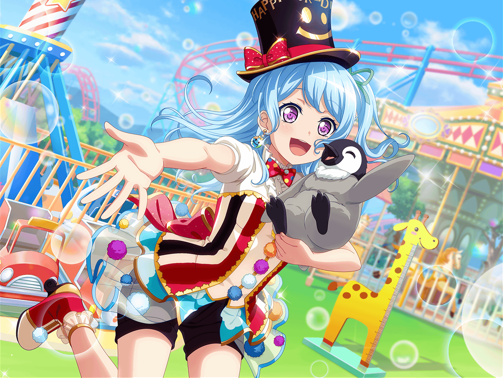

花咲川スマイル遊園地
はぐみ
ゴーカート、楽しかったねーっ！
美咲
逆走しそうになったときはどうなることかと思ったけど……
なんとかゴールできてよかった
薫
フフ、スリリングな出来事も遊園地を
存分に楽しむためのスパイス……つまり、そういうことさ
花音
わ、見て見て美咲ちゃん。
どの乗り物も列があんなに長くなってる……
お客さん、たくさん来てるみたいでよかったね
美咲
そうですね。最初に来たときの寂しい雰囲気が嘘みたいだな〜
はぐみ
あれっ？ こころんがいないよ！ どこに行ったんだろう？
美咲
あ、ジェットコースターの前にいる。
小さい子と話してるみたいだけど……何話してるんだろ？
こころ
みんな、お待たせ！
花音
こころちゃん、何を話してたの？
こころ
ジェットコースターって怖い？ って聞かれたから、
空を飛んでるみたいでとーっても楽しいわよって
教えてあげたの！
美咲
あはは、こころらしいというかなんというか……
花音
こころちゃんが言うと、本当に楽しそうに聞こえるよね
はぐみ
あ！ こころんが話してた子、
ジェットコースター乗りに行ったみたいだよっ！
花音
ふふっ、笑ってるね。怖いって気持ちより、
楽しみって気持ちが強くなったのかな？
薫
さすがはこころだ。私もあの子のように
ジェットコースターを楽しみに思えればいいのだけれど……
美咲
あー、薫さん、高所恐怖症だもんね
薫
常々、高みに存在する儚さを
実感したいと思ってはいるものの……道は険しいね
花音
で、でも、楽しく過ごせるのが１番だし、
無理して乗らなくてもいいんじゃないかな？
はぐみ
そうだよ薫くんっ！ ほかにも楽しい乗り物たくさんあるよっ！
薫
花音、はぐみ。心に沁みる言葉をありがとう。
しかし、いつまでもこのままではいけないと思っているんだ。
私を応援してくれている子猫ちゃん達のためにも、ね
花音
（薫さん、真剣に高所恐怖症を克服したいって思ってるんだ……）
花音
なんとか、薫さんが克服できるような方法を
見つけられたらいいんだけど……
薫
シェイクスピアも言っている。
『言葉は宙に舞い、思いは地に残る』……
なかなか、具体的な方法は思いつかないものだね
花音
役になりきっているときは、大丈夫なんだよね？
たとえば、高いところが大好きな人を演じているときとか……
薫
ああ、私も役者だからね。演じている最中に
自分自身をさらけ出すようなことはしないよ
薫
ただ、後からやってくる恐ろしさが……
あまりにも……筆舌に尽くしがたいんだ
はぐみ
それじゃあ、目を閉じて乗ってみたらいいんじゃないかなっ！？
美咲
いやいや、それじゃあ余計に怖いって
こころ
不思議ね、どうして怖いって思うのかしら？
花音
こころちゃんは、ジェットコースターが
怖いって思ったりしないの？
こころ
思わないわ！ 風になったような気分になるもの！
薫も、高さやスピードをもっと
楽しんでみたらいいんじゃないかしら？
薫
高さやスピードを楽しむ、か……
そんな儚い体験ができたら、きっと素晴らしいだろうね……
美咲
まー、それが簡単にできたら苦労しないっていうか、
そううまくはいかないよね
花音
薫さん、きっと何か、いい方法があると思うんだ。
一緒に考えよう？
薫
ありがとう花音。
明けない夜はないからね。希望を捨てはしないさ
花音
そうだ。みんなで歌を歌いながら乗ってみるのはどうかな？
パレードライブのときみたいに
楽しい気持ちになれるかもしれないよ
薫
パレードライブのときのように……？
花音
みんなで歌えば一人じゃないって感じられるし……
怖いって気持ちより、
楽しい気持ちの方が大きくなるんじゃないかな？
こころ
それはステキなアイディアだわ、花音！
みんなで歌ったら、きっと遊園地中の人達が笑顔になれるわね！
薫
パレードライブ……忘れもしない。
夢のように儚く美しい時間だった。今でも目に焼き付いているよ
花音
お客さんに笑顔がどんどん広がっていったあのときみたいに、
ハロハピのみんなで歌ったら
きっとすっごく楽しいと思うんだ
花音
並んでる途中でやっぱり無理だなって思ったら、
やめたらいいし……みんなも一緒にいるし、
私も頑張るから……薫さん、１回だけ乗ってみない？
美咲
大丈夫ですか？ 花音さんもそんなに
ジェットコースター得意じゃないんじゃ……
薫
花音、ありがとう。その情熱的な儚い想い、確かに受け取ったよ。
そう……ジェットコースターはパレードライブ、
恐れることは何もない……！
美咲
えっ、その気になってる……！？
薫
スマイル遊園地に、私の美声を轟かせてみせるよ！
花音、心配には及ばない。離れていても心は繋がっている……
そこで私の勇姿を見ていてくれ！
はぐみ
はぐみ、かのちゃん先輩に向かっておっきく手を振るねっ！
美咲
あはは。とまあ、薫さんもやる気になったみたいなんで、
花音さんは無理せずここで見守っててください
花音
美咲ちゃん……ありがとう、一生懸命応援するね
こころ
やっぱり、花音はすごいわ！
花音
えっ？ 私は何もしてないよ
こころ
そんなことないわ！ 薫が笑顔になったもの！
花音が薫に勇気をあげたからだわ！
こころ
あたしには怖いっていう気持ちはよくわからないけど、
花音にはわかるのよね？ 薫の気持ちがわかる花音だから、
背中を押すことができたのよ！
花音
こころちゃん……
えへへ、ありがとう。そんなふうに言ってもらえると嬉しいな
３０分後
薫
…………
はぐみ
薫くん、顔が真っ青だよ、だいじょーぶっ！？
薫
ああ、大丈夫さ……この上なく……儚くて……
とても……楽しめたよ……
花音
ふえぇ、薫さん大丈夫？
ごめんね、やっぱりむずかしかったかな……
ちょっと休もう……！？